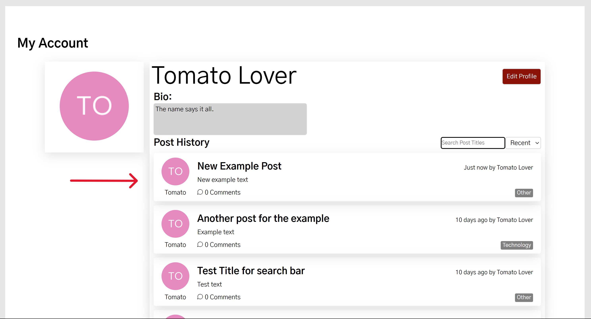
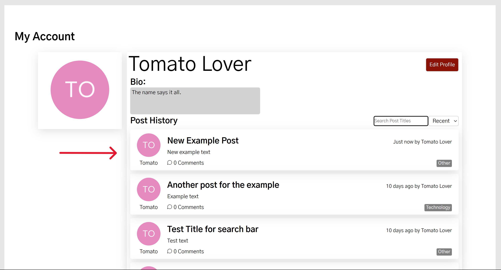

Link to Our GitHub Repository
Installation
Install NodeJS.
Clone the repo.
Run npm install in the root directory as well as the ./client folder.
Credentials
You need to obtain a number (8) of credentials from the team (MongoDB,
Auth0).
Create a .env file in the root directory to store your credentials.
After obtaining the credentials and relevant values, enter them in the
.env in the following format separated by newlines:
<FIELD_NAME> : "<VALUE>", for example, MONGODB_USERNAME:
"myusername"
Running the App
Server and client must be running simultaneously, for this you need two
terminals running.
1. Server: In one terminal window, cd into the /server folder and run npm
start to start the server.
2. Client: In another terminal window, cd into the /client folder and run
npm start to start the client.
3. Visit localhost:3000 to see the client in action.
Upon landing on our page, users are presented with a welcome message asking them to log in to view posts. To do this, navigate to the top right of the navbar, hover over the 'Account' item which will reveal a dropdown menu. Click on 'Log In'.

(Clicking directly on 'ACCOUNT' or attempting to interact with a post will also redirect to the login page.)
This will redirect you to the Auth0 login page where you can either log in with an existing account or create a new one. Clicking on "Sign Up" will take you to the registration page where you can create a new account.

Once logged in, users start out on the home page where all posts are displayed. Users can browse through the posts and click on a post to view it.

Above the posts, there is a search bar and a dropdown menu that sorts the posts based off of a category. The search bar for this page looks for a specific user's name. The only sorting categories are "Recent", "Oldest", and "Popular". Recent and Oldest are based off of when the post was made, while Popular is based off of the number of comments on the post.


When a user creates a post, they can select categories that the post falls under.
These categories are displayed on the post and can be clicked on to filter the posts based on that category.
There is also a "Categories" tab on the Navbar that users can click to go to the Categories page. This page lists all the categories that have been created and show the number of posts associated with it.


When clicking a specific category on either a post or on the Categories page, the user
Once logged in, users can create a post by clicking on the 'Create Post' button located at the top right of the navbar.

Then you will be directed to the 'Add Post' page where you can enter the title, content, and select a category for your post.
If you exceed the character limit for the title or content, the text field will turn red, and you will be unable to submit the post. If you also do not add any text in the title or content fields, the box will turn red and also indicate you need to fill out the field.

Once the title and content fields have been filled out and you have selected the categories to include on your post, you can click the 'Add Post' button to create the post. You will be redirected to the home page where you can see your post.
 

To edit a post, go to the account page and, if needed, search for the desired post title and click on that post. This will bring you to the single post page. Here you can hover over the "Edit Post" dropdown and click the "Edit Post" button.

This will redirect you to the 'Edit Post' page where you can edit the title, content, and categories of the post. This page has the same layout as the 'Add Post' page, and has the same character checks as well.

Once you have made the desired changes, click the 'Edit Post' button to save the changes. You will be redirected to the single post page where you can see the updated post.

To delete a post, go to the account page and, if needed, search for the desired post title and click on that post. This will bring you to the single post page. Here you can hover over the "Edit Post" dropdown and click the "Delete Post" button.

This will show a popup asking you to confirm the deletion of the post. Click the green button titled 'Yes, delete this post'. This will remove the post and redirect you to your account page.


The forum has 9 categories to select from which are shown below. On the Categories page, you can select a category to see all the posts within that category.

When creating a post, you can select the categories that match your post best. You can select as many categories as you see fit.
To change your password, hover over My Account in the top right of the nav bar and select Account Settings. On the Account Settings page you will see a change password button. When you click the button an email will be sent to your email address and will help you change your password.
To delete or edit your post select the post and hover over edit post. To delete the post select Delete Post from the drop-down menu.

To delete your post select the Edit Post from the drop-down menu. You will be brought to a page that looks similar to the Add Post page with your post information filled in. You can change your post information and select Edit Post to save your changes.

To search for a user you can use the search bar. You can sort posts by recent, oldest, and popular.

To search for a post you created select My Account in the top right of the nav bar. All your posts will be in the Post History section of your account page. You can use the search bar to find post titles. You can sort posts by recent, oldest, and popular.